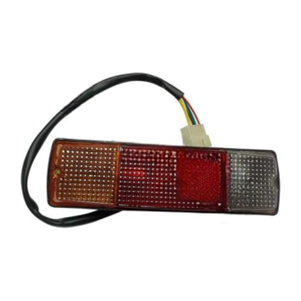

Parts › Electrical › 47640-401

Available
Email for a quote
Komatsu 47640-401 Rear Lamp Assy
| OEM part number | 47640-401 |
| Fits | Komatsu |
| Models / notes | FB15/18/20/25EX-8 |
| Category | Electrical |
| Type | Aftermarket replacement |
Send us the quantity you need and we'll reply with pricing, usually within 24 hours. Not the exact part? We can source it. Send the part number or a photo.